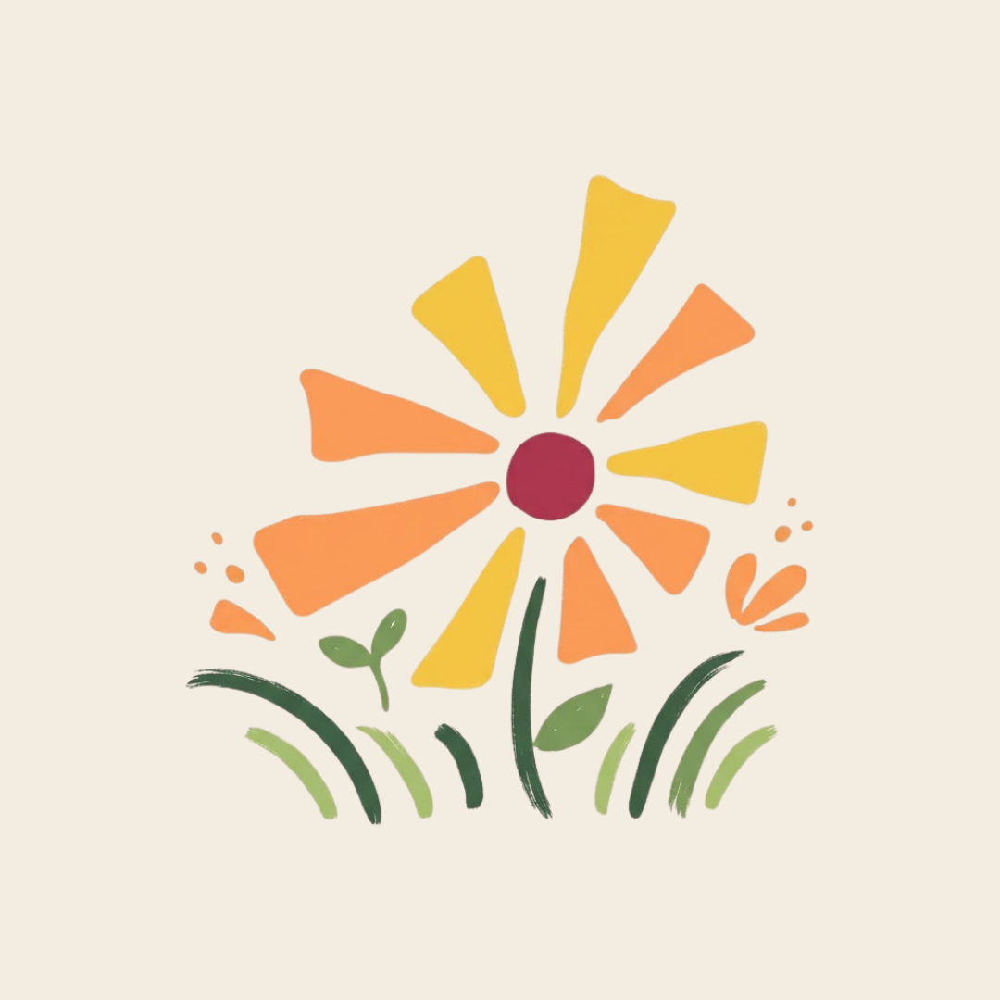

Simpan ke Galeri Bunga
Beri nama cantik untuk bungamu agar mudah ditemukan kembali
🌱 Membuka Kebun Fella...

Gambar bungamu dengan detail bebas & gunakan peralatan lengkap
Beri nama cantik untuk bungamu agar mudah ditemukan kembali
Daftar bunga & sahabat hewan favoritmu yang siap dipanggil atau ditanam kapan saja
Kelola berbagai skenario kebun impianmu, tersimpan aman 100% di browsermu
Mulai kanvas kebun baru dengan tema dan skenario pilihanmu
Panggil kucing, anjing, kelinci, kupu-kupu, atau gambar sendiri hewan kreasimu!
Hangat, ceria & suka berjemur
Ramah, setia & ekor bergoyang
Bulu putih selembut kapas
Sayap magenta anggun memesona
Koi anggun dengan corak oranye & putih
Gambar monster mini, burung, atau hewan unik lainnya di studio gambar dan lepaskan ke taman!
Pilih makhluk unik di bawah untuk dihadirkan ke kebun, atau tekan Spawn Semua!
Ciptakan sahabat hewan impianmu & tentukan sifat habitatnya (darat, terbang, atau air)
Pesan dialog...
1. Menggeser & Zoom Layar (Geser & Atur)
Tarik bidang kosong untuk geser pandangan. Gunakan scroll mouse, tombol + / −, atau cubit layar (*pinch*). Klik target untuk kembali ke tengah.
2. Menggambar Tanah (Pensil Rumput)
Pilih Pensil Rumput untuk memperluas tanah kebun di mana saja. Rumput otomatis bertekstur 3D dan memiliki tunas hijau segar!
3. Menggambar & Menanam Bunga (Studio)
Buka studio dengan tombol Gambar Bunga di sisi kanan, gunakan kuas/cat air/pensil/stempel, lalu tanam di atas atau sekitar rumput.
4. Merawat & Siram Air (Ember & Hujan)
Siram bunga yang haus dengan Ember Air atau aktifkan cuaca Hujan untuk membuat seluruh kebun mekar segar seketika.
0 dari 10 Prestasi Terbuka (0%)
Pilih filter suasana, bingkai Polaroid, dan tulis catatan kenanganmu
Percantik kebunmu dengan pagar, bangku, lentera malam, jembatan sungai, dan pondok hewan
Catat kenangan harian, lihat katalog koleksi, klaim bintang streak & seduh teh bunga